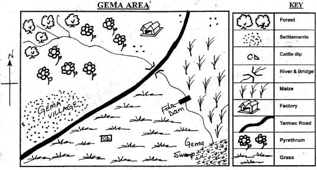
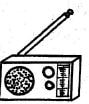
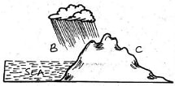
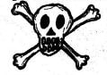
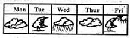
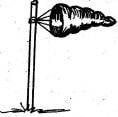
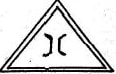

Study the may of GEMA AREA above and answer questions 1 to 71. The economic activity carried out in Gema Area is?
B). farming2. Which of the following food crops is grown in Gema Area?
C). maize3. In which direction is Fola dam from the forest?
D). South East4. The main means of transport in the area is?
D). road5. The people of Gema Area are
A). mixed farmers6. River Gema pours its water into a
A). swamp7. The raw material taken to the factory is used to make?
C). insecticide8. Areas where people live close together are said to be
A). densely populated9. Which one of the following is a traditional form of communication?
C). Drum10. A single parent family consists of
C). one parent and children11. People who helped mothers to give birth in the villages were known as?
B). midwives12. The first African woman to set up the Green Belt was
B). Wangari Maathai13. From milk we get milk products like
A). cheese14. In a society where there is law and order people ____
B). are friendly to each other15. Which of the below means of communication would reach most people ih Kenya?
C).
16. Meat of a sheep is called?
A). mutton17. A ____ is a sad ceremony
B). funeral18. The colour of the flag which means peace is
D). white19. The changing of the youth from childhood to adulthood is called?
D). initiation20. _____ is watering of crops by artificial means.
C). Irrigation21. The compass is used for telling _____
C). direction
22. The type of rainfall shown above is?
D). relief rainfall23. Side B is called?
B). windward24. Side C is called?
C). rainshadow25. A _____ is a wall built across a river to hold water back
B). dam26. Planting trees in areas where there are none is called?
B). afforestation27. People walking along the road are called?
C). pedestrians28. Farmers plant their crops during _____ season
A). rainy29. The four main compass points are known as
A). cardinal points30. The sign below drawn on the electric post means

B). danger31. The fastest means of transport is by
A). air32. The people who live near the lake are likely to be
B). fishermen33. Storage water tanks should be kept ______
A). closed and clean34. Which crop is grown for its flowers?
D). Pyrethrum35. Which of the following activities takes place during the wet season?
C). Planting36. Which one is a basic need?
D). Shelter37. We should conserve our resources because
A). we need them in future38. Grasslands are also called
C). savannah39. Three of the following are allowed to treat people today except?
D). witchdoctor40. Which of the following is an element of weather?
C). Temperature41.

Which two days of the week was the weather cloudy? D). Monday, Thursday42. One of the following is a way of caring for vegetation. Which one?
B). Planting of trees43. Law and order is important because
D). it helps people to leave in peace44. What is the compass point between North and East?
C). North East45. Which of the following physical features was used as a hiding place from enemies attack?
B). Valleys46. Which element of weather is measured by the instrument shown below?

D). Wind47. Which of the following is a food crop?
C). Arrow roots48. Which of the following can be got from trees?.
A). Books49. Why is it important to have moral values in the society?
B). They help people to behave well50. The animals we keep give us the following except?
B). maize51. Things that help us to get wealth are called
C). resources52. Why is it important to work together in the community?
C). Makes work easier53. The Kenya National Anthem has ___ verses
A). 354. When the weather is _____ we wear heavy clothes
D). cold55. This road sign shows a ______

B). bridge56. Which of the following crops is a subsistence crop?
B). Maize57. Our ancestors had holy places of offerings and sacrifices called
D). shrines58. Which one of the following is not a natural feature?
C). Dam59. Maasai live in houses called?
D). manyatta60. When ____ light appears in traffic we should prepare to go
A). amberSECTION B
CHRISTIAN RELIGIOUS EDUCATION
61. Waiting without complaining is
D). patience62. Jesus was crucified with two
B). thieves63. The first Christian martyr was?
C). Stephen64. ______ built the ark
A). Noah65. We should ____ one another
B). love66. _____ denied Jesus.
A). Simon Peter67. People who brought religion in our country were called?
C). missionaries68. When sinners die they go to?
A). hell69. _____ is the light of the world
B). Jesus70. ______ prophesied the birth of Jesus
C). Isaiah71. Jesus fed _____ people with 2 fish and 5 loaves of bread
A). 500072. the disciples of Jesus received the Holy Spirit on the day of?
B). pentecost73. Moses received the ten commandments on Mt. ____
A). Sinai74. A good leader must be ____
D). respectful75. Abraham had a son named ____
B). Isaac76. When Christians are faced with problems they should?
D). pray to God77. When Noah was six hundred years old, God sent floods. It rained for ____ days and nights
B). forty78. Who baptised Jesus?
D). John79. Who served in the Temple when he was young?
A). Samuel80. Ananias and his wife called _____ decided to cheat God
B). Sapphira81. The book of the Bible telling us about the world and everything created is ____
D). Genesis82. Whoever refuses to work should not be allowed to?
C). eat83. Who among the following saw a burning bush?
D). Moses84. Who among the following created the animals?
C). God85. David killed Goliath with?
C). sling and a stone86. ho was raised from death by Jesus?
D). Lazarus87. Who among the following had refused to be washed his feet by Jesus?
A). Peter88. One of the following was a way of expressing peace in African Traditional Society. Which one?
D). Talking to each other89. If your classmate helps you with a pencil after yours got lost you should?
B). be thankful90. Hannah prayed to be given ____
C). a son